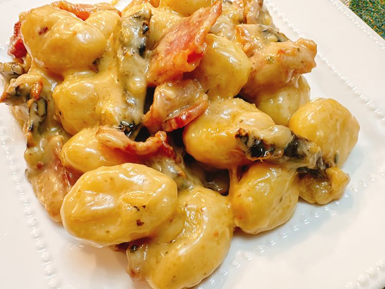

Marry Me Gnocchi

"This marry me gnocchi has the bacon, sun-dried tomatoes, and creamy sauce of marry me chicken, but as a tasty side dish."
Ingredients
- 1/2 pound bacon
- 1 (16 ounce) pack of gnocchi
- 3 cloves garlic, minced
- 1/2 cup chicken broth
- 1/4 cup heavy cream
- 1/2 cup freshly shaved Parmesan cheese
- 1/4 cup sun dried tomatoes
- 1/2 teaspoon Italian seasoning
- 1 pinch crushed red pepper flakes
Directions
- Place a heavy skillet on the stove; lay bacon slices flat in the cold pan, without overlapping.
Turn the stove to medium heat.
- After 5 to 7 minutes, the bacon should start to curl and brown. Use tongs to flip each slice over.
Cook the other side until as crisp as you like, 5 to 7 minutes more.
Remove bacon from the pan; place it on a plate lined with paper towels to drain excess grease.
Once cool enough to handle, roughly chop bacon.
- Add gnocchi to the skillet. Do not stir. Cook for about 5 minutes. Add minced garlic.
Sauté until fragrant, about 30 seconds.
- Add chicken broth and slowly pour in cream; stir to combine. Add in Parmesan cheese.
Stir to melt. Stir in bacon, sun dried tomatoes, Italian seasoning, and red pepper flakes.
Back to Homepage